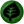
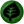

Introdução
Os membros do clã Naturia são conhecidos por sua paixão pela natureza. Eles preferem viver na floresta e na selva com Pokémon do tipo  Grass e Bug.
Os membros do clã Naturia são conhecidos por sua paixão pela natureza. Eles preferem viver na floresta e na selva com Pokémon do tipo  Grass e Bug.
Acesse a página de Tasks do clã Naturia para conferir os requisitos necessários em cada um dos Rankings.
O bônus máximo do clã é aplicado ao completar as tarefas do Rank 5. Abaixo estão as porcentagens de bônus adquiridas:
Grass: Atk 25%, Def 25% Bug: Atk 28%, Def 28%Tier é uma classificação comum entre os Pokémon, indicando não apenas a raridade deste dentro do jogo, mas também qual executará melhor uma função, contanto que a comparação seja realizada entre dois Pokémon de mesma função. O Tier e a Função de um Pokémon pode ser conferido na Pokédex (Atalho Shift + D).
Caso deseje ler mais sobre, acesse a página Tier e Funções ou Tiers (listagem) para conferir a listagem de Tier de todos os Pokémon.
Para facilitar a leitura desta página, a tabela a seguir contém a legenda de todas as Funções, PvP e PvE disponíveis no jogo.

Abaixo estão listados todos os Pokémon do clã Naturia e suas respectivas funções, separados por Tier.


Observação: O Pokémon Shiny Leafeon é considerado tanto PvP como PvE.


*Observação: Apesar de receber o bônus de clã Naturia, o Pokémon Shiny Rotom (mow) não entra na contagem de Pokémon deste clã, por ter seu uso exclusivo em outro clã no PvP.
**Observação: Os Pokémon Shiny Vikavolt, Shiny Gogoat, Shiny Rotom (mow), Shiny Torterra e Shiny Tangela são considerados tanto PvP como PvE.

Observação: Os Pokémon T1H tem força de T1C fora da Nightmare World e são acima dos T1C dentro dela ou pelo menos tem um diferencial perante os demais Pokémon. São balanceados exclusivamente para conteúdos PvE e não podem ser utilizados em duelos PvP.


Observação: O Pokémon Abomasnow é considerado tanto PvP como PvE. Observação**: Apesar de receber o bônus de clã Naturia, o Pokémon Whimsicott não entra na contagem de Pokémon deste clã, por ter seu uso exclusivo em outro clã no PvP.


Rotação Mid-Late Game: Gogoat (Offensive Tanker), Sceptile (Offensive Tanker), Wormadam (Burst Damage Dealer), Tropius (Burst Damage Dealer), Roserade (Burst Damage Dealer), Shiny Sceptile (Burst Damage Dealer)

Rotação Mid-Late Game: Vespiquen (Offensive Tanker), Accelgor (Offensive Tanker), Mega Beedrill (Burst Damage Dealer), Kricketune (Burst Damage Dealer), Shiny Kricketune (Burst Damage Dealer), Shiny Beedrill (Burst Damage Dealer)

Observação: A exclusividade é aplicada apenas em conteúdos PvP. No PvE, o uso é liberado para todos os clãs.
Para obter um Shiny Vileplume, fale com a NPC Elijah, localizada na área do Clã Naturia, no Trade Center.

Para obter um Wormadam Ground ou Wormadam Steel, fale com a NPC Elijah, na área de Naturia, na resistência de Cerulean.

Abaixo são apresentadas as efetividades dos Pokémon deste clã, considerando apenas aqueles que possuem um elemento. A efetividade pode mudar caso o Pokémon possua dois elementos ou possua alguma resistência à algum elemento, como é o caso do Venusaur, que possui a passiva Thick Fat, permitindo que ganhe resistência contra ataques do tipo Fire e Ice (0,5x).
A efetividade de um Pokémon pode ser conferida na Pokédex ou realizando uma busca na página Pokémon (uso do Ctrl+F recomendado). Clique no ícone do elemento desejado para conferir a tabela de efetividade deste clã.
Grass BugMais informações poderão ser adquiridas acessando a página Efetividades.

Pagina Principal